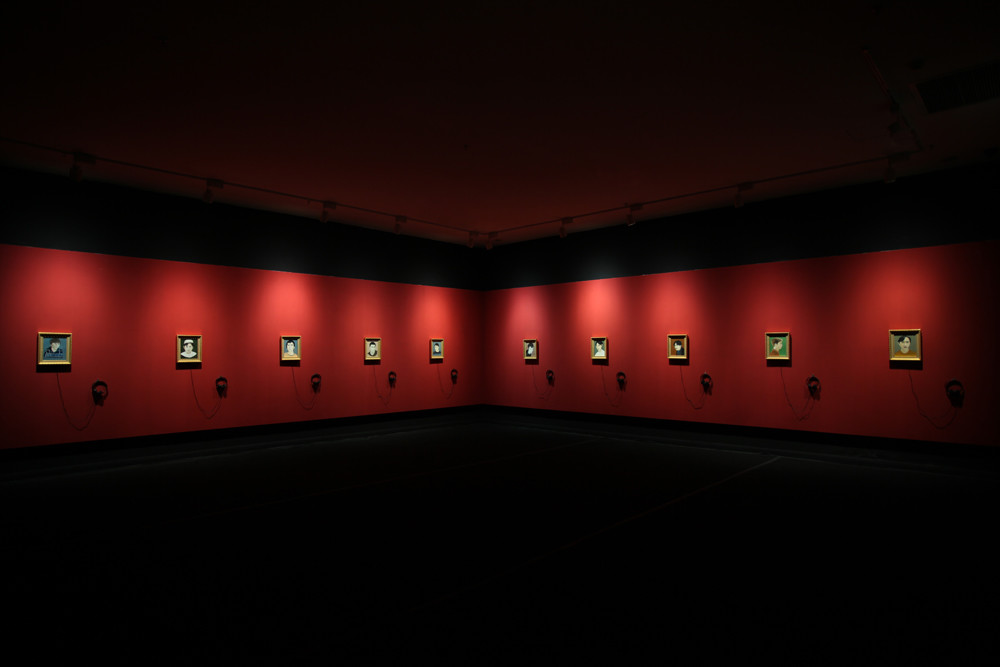
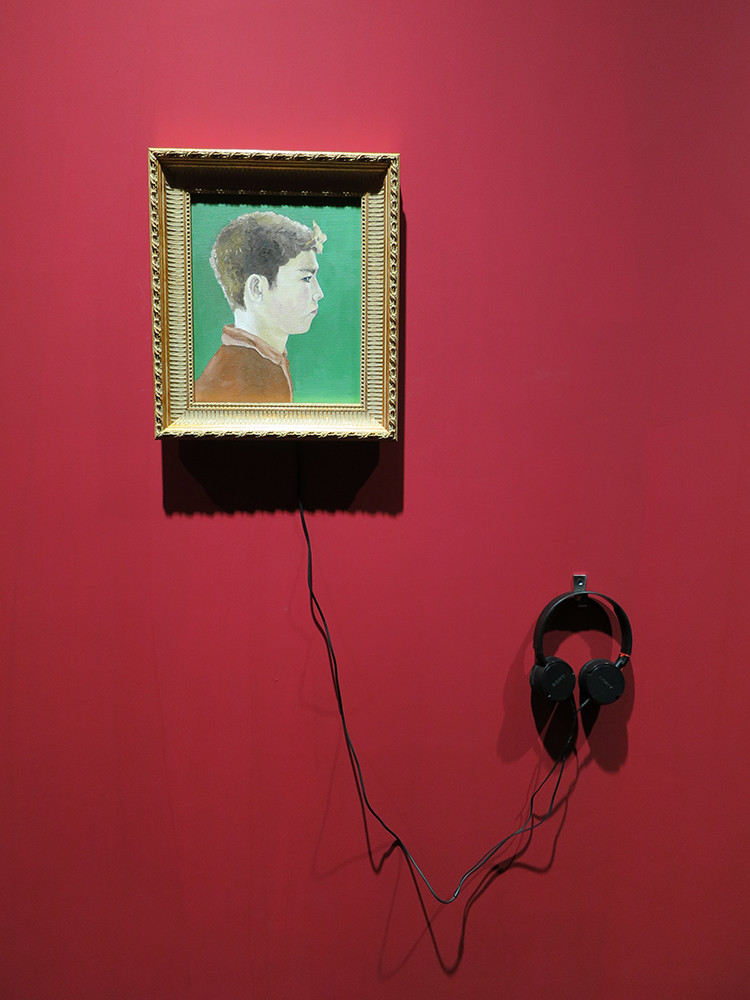
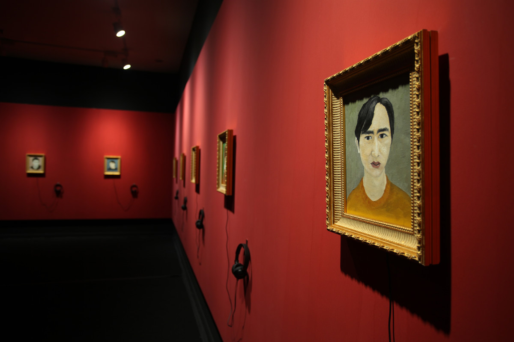
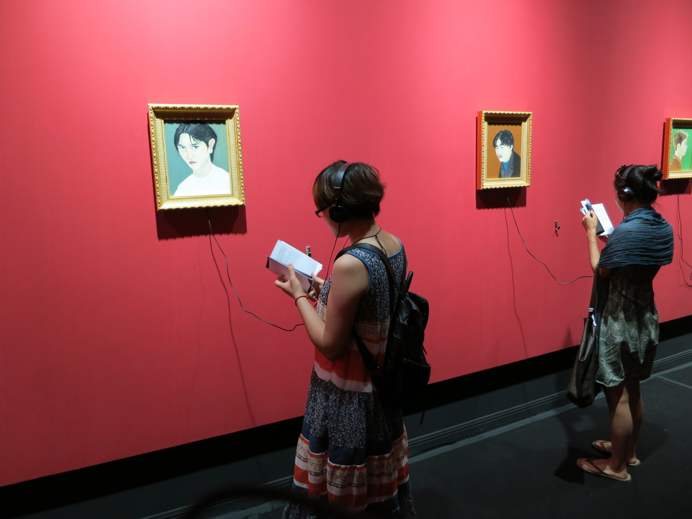

望京少年 | WANG JING YOUTH

油画尺寸40x34cm， 10幅， 木质外框 ，2013
Action, Painting, Sound; Oil on canvas 40x34cmx10, Wood frame, 2013
在我生活的望京街区（北京）有一个维吾尔族少年，很多人见过他，并且坚定的认为他是个小偷。我找了十个见过他的居民，请他们给我描述这位少年的长相，再将其画出来。
维吾尔族是生活在中国新疆天山以南的少数民族，信仰伊斯兰教。
In my wangjing neighborhood (Beijing), there was a Uighur teenager who many people had met and firmly believed was a thief. I asked ten people who had met him to describe to me what the boy looked like and draw a picture of him.
A minority live in the south of Tian Shan Mountain, Xinjiang, Uygur people believe in Islamism.
从《伊斯坦布尔画家》到《望京少年》，对于石玩玩而言，绘画不再是单纯的语言表述与再现事物的工具，它成为了艺术家手中的道具、证物或沟通途径。绘画的动因也渐变成为对绘画的功能和对象的质疑。《望京少年》中的少年形象是艺术家通过采集不同人差异化的声音描述，参照绘制出的肖像。石玩玩试图打开绘画单向表达和逆向阅读的方式，让绘画从一开始变得开放：参与者的一件，绘制对象的不确定性、艺术家的主观介入以及观者的阅读经验一同构成了作品。——李杰
From Istanbul painter to wangjing boy, for Shi, painting is no longer a simple tool to express and reproduce things, but a prop, evidence or communication way in the hands of artists. The motivation of painting has gradually become a question about the function and object of painting. The juvenile image in wangjing boy is described by artists by collecting different voices of different people and referring to the painted portrait. Shi tries to open the way of one-way expression and reverse reading in painting, making the painting open from the beginning: the work is composed of the participants, the uncertainty of the drawing object, the subjective intervention of the artist and the reading experience of the audience.
——Li Jie A4 Contemporary Arts Center art director
我觉得《望京少年》可以分成两部分，一部分是他们的叙述，这个叙述带有非常强烈的社会性，介于调查和刑侦之间，最后形成特别有意思的社会性叙述的样本。然后他又进行了一个虚构工作。反过来讲，社会性叙述里面有非常强烈的虚构成分，它是从某种人，比如说维族小偷这种原型叙述出发的东西，不一定有很那么强的记录的成分在里面，却又非常强烈的另一种“虚构”，也许这件作品就是两种虚构的一种互动。——杨北辰
I think Wangjing boy can be divided into two parts, one is their narration, which has a very strong social nature, between investigation and criminal investigation, and finally forms a particularly interesting sample of social narration. Then he did a fictional job. On the other hand, there is a very strong fictional element in the social narrative, which starts from the archetypal narrative of some people, such as Uyghur thieves. There is not necessarily a very strong recording element in the social narrative, but there is a very strong "fictional" element. Maybe this work is an interaction between the two kinds of fictional elements.
——Yang Beichen Art critic

A4当代艺术中心，成都
A4 Contemporary Arts Center, Chendu

A4当代艺术中心，成都
A4 Contemporary Arts Center, Chendu

A4当代艺术中心，成都
A4 Contemporary Arts Center, Chendu